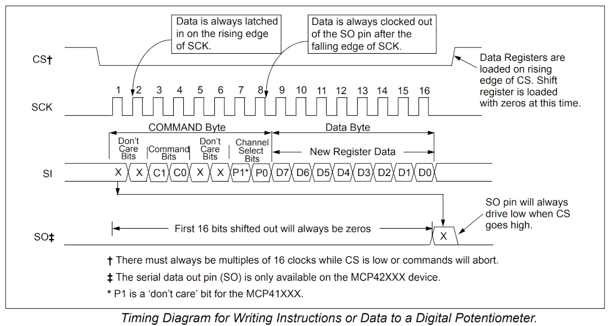
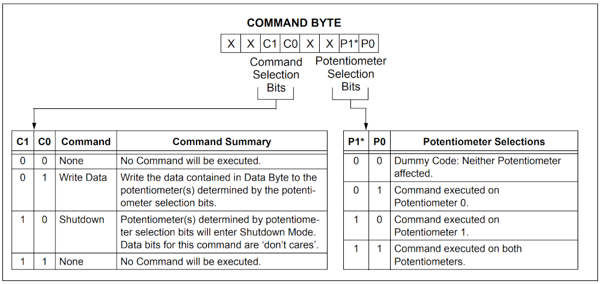
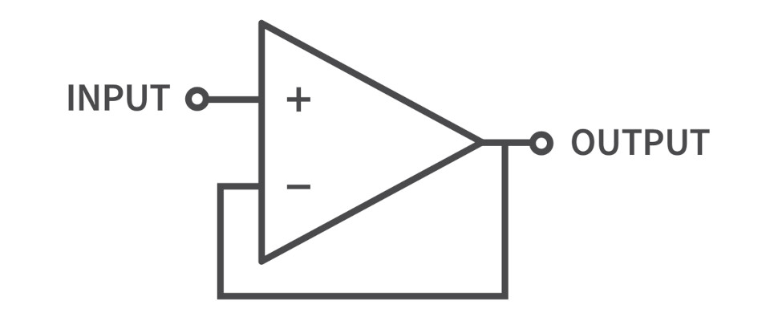
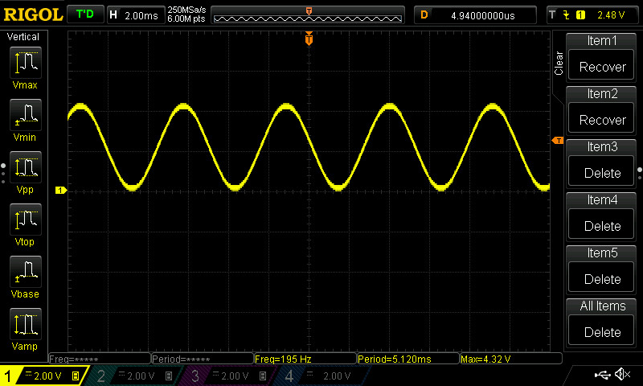
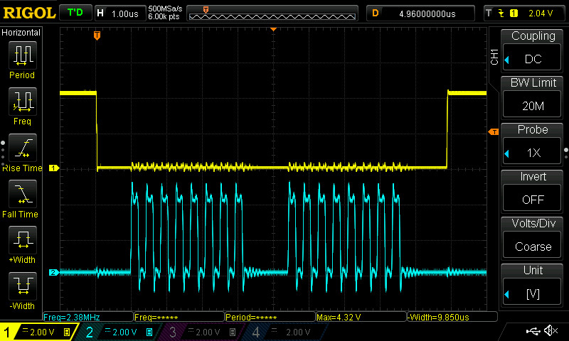

การใช้งานไอซีตัวต้านทานปรับค่าได้แบบดิจิทัล (Digital Potentiometer)#
Keywords: Digital Potentiometer, Analog Output, DAC, Arduino Uno R4
ความรู้และทักษะพื้นฐานที่เกี่ยวข้อง
- อิเล็กทรอนิกส์ (Electronics): การใช้งานไอซี Digital Potentiometer
- ไมโครคอนโทรลเลอร์ (Microcontroller): การใช้งานบอร์ด Arduino Uno R4 Wi-Fi การอ่านค่าสัญญาณแอนะล็อกด้วย ADC การสร้างสัญญาณแอนะล็อกเอาต์พุตด้วย DAC ที่มีอยู่ภายในชิปไมโครคอนโทรลเลอร์ และการสื่อสารข้อมูลด้วยบัส SPI
- การวัด (Measurement): การใช้งาน USB Logic Analyzer เพื่อวิเคราะห์สัญญาณดิจิทัล
- การเขียนโค้ดและการใช้ซอฟต์แวร์ (Software/Coding): การเขียนโค้ด Arduino C/C++ ด้วย Arduino IDE
▷ ไอซีตัวต้านทานปรับค่าได้แบบดิจิทัล#
ไอซีประเภทที่เรียกว่า "ตัวต้านทานปรับค่าได้แบบดิจิทัล" (Digital Potentiometer: DigiPot) มีให้เลือกใช้หลายรุ่นจากหลายผู้ผลิต เช่น บริษัท Microchip และ ADI / Maxim Integrated / Dallas Semiconductor เป็นต้น
ในภาคเอาต์พุตของไอซีประเภทนี้ มี 3 ขา เหมือนตัวต้านทานปรับค่าได้ทั่วไป (Potentiometer) เช่น ตั้งชื่อขาเป็น A, W (Wiper) และ B ตามลำดับ
ค่าความต้านทาน ระหว่างขา A กับ B จะคงที่ แต่ความต้านทาน (วัดความต้านทานที่ขา A กับ W) และ (วัดความต้านทานที่ขา W กับ B) ปรับเปลี่ยนได้ โดยการโปรแกรมค่า ถ้าค่า เพิ่มขึ้น ค่าของ จะต้องลดลง แต่ผลรวมจะต้องคงที่ กล่าวคือ
รูป: เปรียบเทียบรูปแบบการใช้งาน (Source: Microchip)
การต่อใช้งานมีสองรูปแบบคือ ใช้ 3 ขา สำหรับการสร้างวงจรแบ่งแรงดัน และใช้เพียง 2 ขา โดยใช้ขา W ต่อเข้ากับขา A ตามรูปตัวอย่าง
ภายในไอซี มีวงจรดิจิทัลเพื่อกำหนดตำแหน่งของการเลือกค่าความต้านทาน ภายในมีตัวต้านทานหลายตัวต่ออนุกรมกันอยู่ และมีวงจรที่ใช้ทรานซิสเตอร์ (เช่น Transmission Gate) หรือมองว่าเป็นวงจร "มัลติเพล็กซ์เซอร์" (Analog Multiplexer) ทำหน้าที่เลือกจุดเชื่อมต่อสัญญาณไปยังขา W
รูป: วงจรเครือข่ายตัวต้านทานภายในไอซีประเภท DigiPot (Source: ADI)
ความแตกต่างของไอซีประเภทนี้ในการเลือกใช้งาน ได้แก่
- รูปแบบการสื่อสารข้อมูลเพื่อเขียนข้อมูลดิจิทัลไปยังไอซี เช่น
- สื่อสารด้วบัส 3-Wire SPI
- สื่อสารด้วยบัส I2C
- ใช้สัญญาณดิจิทัล Up/Down เพื่อปรับค่าขึ้นหรือลง
- จำนวนขาสำหรับตัวต้านทาน
- มี 3 ขา (Potentiometer) หรือ
- มี 2 ขา (Rheostat / Variable Resistor)
- จำนวนของตัวต้านทานปรับค่าได้แบบดิจิทัล ในตัวถังเดียวกันของไอซี
- หนึ่งตัว (Single: 1x)
- สองตัว (Dual: 2x)
- สี่ตัว (Quad: 4x)
- ความละเอียดในการปรับค่าได้ (Bit Resolution) เช่น
- 6 บิต (ปรับค่าได้ 64 ระดับ)
- 7 บิต (ปรับค่าได้ 128 ระดับ)
- 8 บิต (ปรับค่าได้ 256 ระดับ)
- ค่าความต้านทาน (End-to-End Resistance: ) เช่น
- 10kΩ, 50kΩ หรือ 100kΩ เป็นต้น
- โดยทั่วไป ก็มีให้เลือกใช้ได้ในช่วง 1kΩ จนถึง 1MΩ
- ช่วงแรงดันไฟเลี้ยงที่ทำงานได้ (Voltage Supply)
- ค่าความต้านทานของขา W (Wiper Contact Resistance: ):
- โดยทั่วไป ก็มีค่าอยู่ในช่วง 50Ω ~ 100Ω ตามเอกสารของผู้ผลิต
- ความคลาดเคลื่อนของค่าความต้านทาน (Resistor Tolerance Error)
- ย่านความถี่สำหรับการลดทอน -3dB ในกรณีที่นำตัวต้านทานไปใช้กับสัญญาณคาบ
- Bandwidth: 1MHz หรือ สูงกว่า
- การบันทึกค่าเอาต์พุตและข้อมูลไม่สูญหายเมื่อปิดไฟเลี้ยง:
- มีหน่วยความจำแบบ EEPROM (Nonvolatile): จะใช้ค่าเดิมที่เคยบันทึกไว้
- ไม่มีหน่วยความจำ (Volatile): โดยทั่วไป เมื่อเริ่มต้นจะได้เป็นค่ากึ่งกลาง และ
- รูปแบบตัวถังของไอซี (IC Package) และจำนวนขา
- โหมดการประหยัดพลังงานและปิดการใช้งานตัวต้านทาน (Low-Power Mode / Shutdown)
- เพื่อลดปริมาณกระแสที่ไหลผ่านขา W และตัวต้านทาน หรือ ปิดการใช้งาน
ยกตัวอย่างไอซี MCP41010 ของบริษัท Microchip ซึ่งมีข้อมูลเชิงเทคนิค ดังนี้
- มีความละเอียดให้การปรับค่าความต้านทาน 8 บิต (256 taps)
- ความต้านทาน (End-to-End Resistance): 10 kΩ
- ความต้านทานของขา W (Wiper Resistance): 50Ω (typ.)
- แรงดันไฟเลี้ยง (VCC): 2.7V ~ 5.5V (Single Supply)
- สื่อสารข้อมูลด้วยบัส SPI ทำงานในโหมด (0,0) หรือ (1,1)
- ความถี่สูงสุดสำหรับ SCK 10MHz (VDD=5V)
- ถ้าใช้ระดับแรงดันไฟเลี้ยงน้อยลง เช่น 3.3V ความถี่สูงสุดที่ใช้ได้ จะต้องลดลง
- ย่านความถี่สำหรับ -3dB: 1MHz Bandwidth
- ไม่มีหน่วยความจำแบบ Non-Volatile EEPROM
- ค่าเริ่มต้นคือ
80h(128) ซึ่งเป็นค่ากึ่งกลาง (Mid-scale Position)
- ค่าเริ่มต้นคือ
การประยุกต์ใช้งานไอซีประเภท DigiPot ได้แก่
- การนำไปใช้สร้างวงจร DAC (Digital-to-Analog Converter)
- การปรับค่าความต้านสำหรับวงจร OpAmp เพื่อกำหนดค่าอัตราขยายสัญญาณ (OpAmp Gain Control)
- การกำหนดค่าความถี่ Cutoff สำหรับตัวกรองสัญญาณ (OpAmp-based Active Filter) โดยการปรับค่าตัวต้านทาน เป็นต้น
รูป: ตัวถังของไอซี MCP401x และแบ่งเป็น Rheostat กับ Potentiometer (Source: Microchip)
รูป: ตัวถังของไอซี MCP41xx (Single) และ MCP42xx (Dual)
รูป: โครงสร้างภายและรูปแบบการเชื่อมต่อสำหรับไอซีในรุ่น MCP4xxxx ของบริษัท Microchip
รูป: ตัวอย่างการประยุกต์ใช้งานสำหรับไอซี MCP41010 (Source: Microchip)
คำแนะนำ: ในกรณีที่ใช้ไอซี Digital Potentiometer สร้างวงจรแบ่งแรงดันไฟฟ้า แนะนำให้ต่อวงจรเพิ่ม โดยใช้ไอซี OpAmp มาสร้างเป็นวงจร Voltage Buffer ก่อนนำสัญญาณเอาต์พุตไปต่อใช้งานกับวงจรอื่น หากมีค่าอิมพีแดนซ์ค่อนข้างต่ำ (Low Input Impedance)
รูป: ตัวถังและตำแหน่งขาของไอซี MCP41010 (Source: Microchip)

รูป: ไดอะแกรมเชิงเวลาสำหรับการสื่อสารข้อมูลด้วยบัส SPI ตามเอกสาร Datasheet

รูป: ไบต์คำสั่งสำหรับ MCP41010
การปรับค่าความต้านทานของไอซี MCP41010 จะต้องกำหนดค่าให้ไบต์คำสั่ง หรือ
Command Byte โดยให้มีค่าบิต C1C0 = "01" และ P1P0 = "01"
(ใช้กับ Potentiometer 0 เนื่องจาก MCP41010 มีเพียงอันเดียว)
ดังนั้นจะได้ไบต์คำสั่งเป็น 11h (hex)
▷ การทดลองเขียนโปรแกรมด้วย Arduino#
ถัดไปเป็นตัวอย่างการเขียนโปรแกรม Arduino เพื่อใช้ปรับเลือกค่าความต้านทานของไอซี
MCP41010 เชื่อมต่อด้วยบัส SPI และต่อใช้งานเป็นวงจรแบ่งแรงดัน (Voltage Divider)
ใช้แรงดันไฟเลี้ยง (+5V) จากบอร์ดต่อเข้าที่ขา PA0 และขา PB0 ต่อกับ GND ของวงจร
ดังนั้นจะได้สัญญาณแอนะล็อกที่ขา PW0 และสามารถนำไปใช้ทดลองใช้กับวงจร ADC
(Analog-to-Digital Converter) ภายในชิปไมโครคอนโทรลเลอร์ และตรวจสอบดูค่าที่วัดได้
บอร์ดไมโครคอนโทรลเลอร์ที่ได้เลือกมาทดลองใช้คือ Arduino Uno R4 WiFi (compatible)
บนบอร์ดมีชิปไมโครคอนโทรลเลอร์ Renesas RA4M1 (Arm Cortex-M4F, 48MHz)
ภายในมีวงจร ADC ที่แปลงสัญญาณแอนะล็อกให้เป็นข้อมูลดิจิทัล ความละเอียดสูงสุด 14 บิต และเลือกใช้ขาอินพุต
A0 ~ A5 ได้ ในตัวอย่างนี้ ได้เลือกใช้ขา A1 สำหรับสัญญาณอินพุต-แอนะล็อก
ตั้งค่าความละเอียดสำหรับ ADC เท่ากับ 12 บิต และส่งข้อมูลขนาด 8 บิต ซึ่งเป็นค่าตามฟังก์ชันไซน์
ให้มีค่าอยู่ในช่วง 0..255 ไปยังไอซี MCP41010
ขา Arduino Pins สำหรับการเชื่อมต่อด้วยบัส SPI ไปยังไอซี MCP41010 มีดังนี้
- SCK:
D13 - CIPO (MISO):
D12 - COPI (MOSI):
D11 - /CS:
D10
#include <SPI.h>
const int CS_PIN = 10; // Chip select pin
void setup() {
Serial.begin( 115200 );
pinMode( CS_PIN, OUTPUT );
digitalWrite( CS_PIN, HIGH );
SPI.begin();
analogReadResolution( 12 ); // 12-bit: 0..4095
writeDigiPot( 0 );
}
void writeDigiPot( uint8_t value ) {
// Begin SPI transaction with specified settings
// 1MHz SCK clock, MSB first, SPI Mode 0
SPI.beginTransaction(SPISettings(1000000, MSBFIRST, SPI_MODE0));
digitalWrite(CS_PIN, LOW); // Select the device
SPI.transfer( 0x11 ); // Write command byte
SPI.transfer( value ); // Write data byte
digitalWrite(CS_PIN, HIGH); // Deselect the device
SPI.endTransaction(); // End SPI transaction
}
const int N=32; // Number of samples
void loop() {
static uint8_t index = 0; // Sample index
// Write 8-bit sample value to MCP41010
writeDigiPot( (uint8_t)(127*(1+sin(2*PI*index/N))) );
// Increment the sample index
index = (index+1) % N;
delay(5);
// Read analog input at A1 pin
int a1 = analogRead( A1 );
// Send a text string to Serial
Serial.println( String("MAX:4095,MIN:0,A1:") + a1 );
}
รูป: การต่อวงจรโดยใช้ไอซี MCP41010 บนเบรดบอร์ด + บอร์ด Uno R4 Wi-Fi
รูป: ตัวอย่างการแสดงข้อมูลที่ได้รับให้เป็นกราฟใน Arduino Serial Plotter และได้รูปกราฟที่มีลักษณะเป็นคลื่นไซน์
รูป: การใช้โปรแกรม PulseView ร่วมกับอุปกรณ์ 8-Channel USB Logic Analyzer เพื่อวัดสัญญาณ SPI
▷ การสร้างสัญญาณแอนะล็อก 2 วิธี เปรียบเทียบกัน#
อีกตัวอย่างหนึ่งเป็นการเปรียบเทียบการสร้างสัญญาณแอนะล็อก 2 วิธี ในตัวอย่างที่แล้ว ได้ใช้ไอซี MCP41010
สร้างสัญญาณแอนะล็อกด้วยวงจรแบ่งแรงดัน มี 256 ระดับ ถัดไปเป็นวิธีที่สองคือ การใช้วงจร DAC
ที่มีความละเอียด 12 บิต และสร้างสัญญาณเอาต์พุต เช่นเดียวกันวิธีแรก แต่ออกที่ขา A0 / DA0
และอ่านค่าสัญญาณแอนะล็อกที่ขา A1 และ A2 เพื่อเปรียบเทียบแรงดันไฟฟ้าที่ได้จากทั้งสองวิธี
แล้วดูผลลัพธ์ที่ได้
#include <SPI.h>
const int CS_PIN = 10; // Chip select pin
void setup() {
Serial.begin(115200);
pinMode( CS_PIN, OUTPUT );
digitalWrite( CS_PIN, HIGH );
SPI.begin();
analogReadResolution( 12 ); // 12-bit ADC: 0..4095
analogWriteResolution( 12 ); // 12-bit DAC
writeDigiPot( 0 );
}
void writeDigiPot( uint8_t value ) {
// Begin SPI transaction with specified settings
SPI.beginTransaction(SPISettings(1000000, MSBFIRST, SPI_MODE0));
digitalWrite(CS_PIN, LOW); // Select the device
SPI.transfer( 0x11 ); // Write command byte
SPI.transfer( value ); // Write data byte
digitalWrite(CS_PIN, HIGH); // Deselect the device
SPI.endTransaction(); // End SPI transaction
}
const int N=32;
void loop() {
static uint8_t index = 0;
uint16_t value = (uint16_t)(127*(1+sin(2*PI*index/N)));
index = (index+1) % N;
writeDigiPot( value );
analogWrite( DAC, value << 4 );
value = (value+1) % N;
delay(5);
int a1 = analogRead( A1 ); // Read analog input at A1 pin
int a2 = analogRead( A2 ); // Read analog input at A2 pin
Serial.println( String("MAX:4095,MIN:0,A1:") + a1 + ",A2:" + a2 );
}
รูป:การเปรียบเทียบกราฟข้อมูลที่อ่านได้จากอินพุต A1 และ A2 โดยใช้ Arduino Serial Plotter
จากการทดลองและรูปกราฟสัญญาณที่ได้ จะเห็นได้ว่า ทั้งสองวิธีได้ผลเหมือนกัน (เห็นกราฟทั้งสองเส้นทับซ้อนกันได้อย่างชัดเจน)
▷ การใช้งานวงจร OpAmp ภายในชิป RA4M1#
อีกหนึ่งตัวอย่างเป็นการทดลองใช้วงจร Built-in OpAmp ภายในชิปไมโครคอนโทรลเลอร์
RA4M1 โดยมีขา IN+ และ IN- ตรงกับขา A1 และ A2 ตามลำดับ
และมีขาเอาต์พุตตรงกับขา A3
ในตัวอย่างนี้ เป็นการทดลองใช้วงจร Built-in OpAmp โดยสร้างเป็นวงจร Voltage Follower และใช้แรงดันไฟเลี้ยงสำหรับไอซี MCP41010 เปลี่ยนจาก +5V มาเป็น +3.3V ดังนั้นแรงดันเอาต์พุตที่ได้จากไอซี จะอยู่ในช่วง 0V ~ 3.3V เท่านั้น แล้วจึงนำไปป้อนให้ขาอินพุตของ Built-in OpAmp (ขา IN+)
การใช้ขา Analog I/O สำหรับ Built-in OpAmp (เพื่อใช้งานในโหมด Voltage Follower)
A1เป็นขาอินพุตIN+ของ OpAmp ต่อกับสัญญาณแอนะล็อกที่ได้จากวงจรแบ่งแรงดันA2เป็นขาอินพุตIN-ของ OpAmp ต่อกับขาA3A3เป็นขาเอาต์พุตOUTของ OpAmp ต่อกับขาA2A4เป็นขาอินพุต ต่อกับขาA3เพื่อวัดสัญญาณที่ได้จากวงจร Voltage Follower

รูป: วงจร Voltage Follower โดยใช้ OpAmp
#include <SPI.h>
#include <OPAMP.h>
const int CS_PIN = 10; // Chip select pin
void setup() {
Serial.begin(115200);
pinMode( CS_PIN, OUTPUT );
digitalWrite( CS_PIN, HIGH );
// Enable builtin OpAmp in high-speed mode
OPAMP.begin( OPAMP_SPEED_HIGHSPEED );
// Initialize the SPI interface
SPI.begin();
// Set the bit resolution for ADC
analogReadResolution( 12 ); // 12-bit: 0..4095
// Write zero to the MCP41010
writeDigiPot( 0 );
}
void writeDigiPot( uint8_t value ) {
// Begin SPI transaction with specified settings
// 1MHz SCK clock, MSB first, SPI Mode 0
SPI.beginTransaction(SPISettings(1000000, MSBFIRST, SPI_MODE0));
digitalWrite(CS_PIN, LOW); // Select the device
SPI.transfer( 0x11 ); // Write command byte
SPI.transfer( value ); // Write data byte
digitalWrite(CS_PIN, HIGH); // Deselect the device
SPI.endTransaction(); // End SPI transaction
}
const int N=32; // Number of samples
void loop() {
static uint8_t index = 0; // Used to keep the sample index
// Write 8-bit sample value to the MCP41010
writeDigiPot( (uint8_t)(127*(1+sin(2*PI*index/N))) );
// Increment the sample index
index = (index+1) % N;
delay(5);
// Read the analog input at Arduino analog pin A4
int a4 = analogRead( A4 );
// Send a text string to the Serial
Serial.println( String("MAX:4095,MIN:0,A4:") + a4 );
}
รูป:กราฟข้อมูลที่อ่านได้จากอินพุต-แอนะล็อก หมายเลข A4
▷ การใช้ Hardware Timer กำหนดจังหวะการเปลี่ยนค่าเอาต์พุต#
ถัดไปเป็นตัวอย่างการเขียนโค้ด Arduino Sketch ที่ใช้คำสั่งของคลาส FspTimer
เพื่อใช้งานวงจร Hardware Timer ภายในชิป RA4M1 และเปิดใช้งานอินเทอร์รัพท์
การทำงานของวงจรตัวนับ จะทำให้เกิดอินเทอร์รัพท์ด้วยอัตราคงที่ เช่น 50kHz
และเรียกฟังก์ชัน timerCallback(...) ซึ่งทำหน้าที่เรียกฟังก์ชัน writeDigiPot(...)
ให้ส่งข้อมูลไบต์ถัดไปออกทาง SPI
ไปยังไอซี MCP41010 (ตั้งค่าความถี่ SCK ไว้ประมาณ 2.5MHz)
ข้อมูลไบต์ที่ถูกส่งไป จะได้จากอาร์เรย์ (SAMPLES_TABLE) ที่มีค่าคงที่แบบ
8-bit Unsigned จำนวน 256 ตัวเลข (NUM_SAMPLES) ตามลำดับ
ซึ่งตัวเลขเหล่านี้ได้จากการคำนวณตามฟังก์ชันไซน์ในหนึ่งคาบ
และมีการปรับแอมพลิจูดให้ได้ค่าเป็นตัวเลขในช่วง 0..255
ดังนั้นสัญญาณเอาต์พุตจะมีความถี่เท่ากับ 50kHz / 256 = 195.3Hz
#include <SPI.h>
#include <FspTimer.h> // Use the FspTimer class
const int CS_PIN = 10; // Chip select pin
const int NUM_SAMPLES = 256;
uint8_t SAMPLES_TABLE[ NUM_SAMPLES ];
FspTimer timer;
uint8_t sample_index = 0;
void writeDigiPot( uint8_t value ) {
// Begin SPI transaction with specified settings
// 2.5MHz SCK clock, MSB first, SPI Mode 0
SPI.beginTransaction(SPISettings(2500000, MSBFIRST, SPI_MODE0));
digitalWrite( CS_PIN, LOW ); // Select the device
SPI.transfer( 0x11 ); // Write command byte
SPI.transfer( value ); // Write data byte
digitalWrite( CS_PIN, HIGH ); // Deselect the device
SPI.endTransaction(); // End SPI transaction
}
void timerCallback(timer_callback_args_t __attribute((unused)) *p_args) {
writeDigiPot( SAMPLES_TABLE[sample_index++] );
}
void timerInit() {
timer_mode_t timer_mode = TIMER_MODE_PERIODIC;
uint8_t timer_type = GPT_TIMER;
float timer_freq_hz = 50e3f; // Frequency = 50kHz
int timer_index = FspTimer::get_available_timer(timer_type);
if (timer_index < 0) {
timer_index = FspTimer::get_available_timer(timer_type, true);
}
if (timer_index >= 0) {
timer.begin( timer_mode, timer_type, timer_index,
timer_freq_hz, 0.0, timerCallback, nullptr);
timer.setup_overflow_irq();
timer.open();
timer.start();
}
}
void setup() {
pinMode( CS_PIN, OUTPUT );
digitalWrite( CS_PIN, HIGH );
SPI.begin();
for (int i=0; i < NUM_SAMPLES; i++) {
SAMPLES_TABLE[i] = (uint8_t)(127*(1+sin(2*PI*i/NUM_SAMPLES)));
}
timerInit();
}
void loop() {
}

รูป:สัญญาณเอาต์พุตที่ได้จากการวัดด้วยออสซิลโลสโคป (ความถี่วัดได้ 195Hz)

รูป: คลื่นสัญญาณ CH1: CSN และ CH2: SCK
▷ กล่าวสรุป#
บทความนี้นำเสนอการใช้งานไอซี MCP41010 การใช้งานร่วมกับบอร์ด Arduino Uno R4 การสร้างวงจรแบ่งแรงดันไฟฟ้าที่ปรับระดับแรงดันเอาต์พุตที่ได้ การเปรียบเทียบการสร้างสัญญาณเอาต์พุต-แอนะล็อก ด้วยวิธีที่ใช้ไอซี MCP41010 และวงจร DAC ที่มีอยู่ในชิปไมโครคอนโทรลเลอร์ RA4M1
บทความที่เกี่ยวข้อง
- การฝึกต่อวงจรแบ่งแรงดันบนเบรดบอร์ดร่วมกับบอร์ด Arduino Uno
- การใช้งานบอร์ด Arduino Uno R4 Wi-Fi ในเบื้องต้น
- Arduino UNO R4 WiFi Cheat Sheet
This work is licensed under a Creative Commons Attribution-ShareAlike 4.0 International License.
Created: 2024-11-09 | Last Updated: 2024-11-13